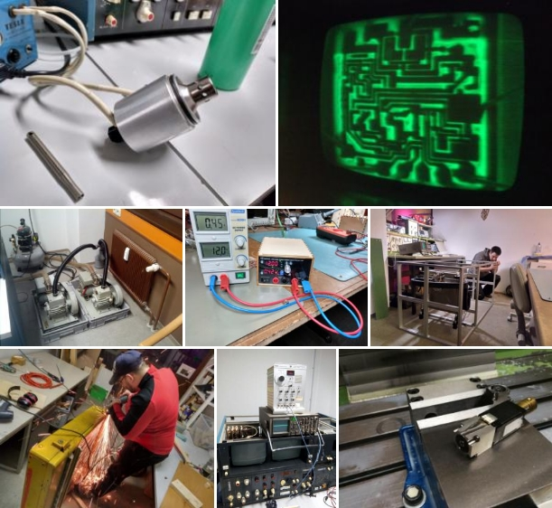

Das hier ist eigentlich kein Event. Wir wurden aber darauf hingewiesen, dass es auf unserer Homepage auf den ersten Blick danach aussieht, als würde hier nichts passieren. Das Gegenteil ist der Fall und da wir es in absehbarer Zeit wohl nicht auf die Reihe bekommen werden, mehr Events anzulegen, gibt es jetzt diesen Dummy.
Der Space war 2018 an 363 Tagen geöffnet. Die verbliebenen zwei Tage konnten wir leider nicht öffnen, weil die Gebäude-Tür defekt war. Im Schnitt waren pro Tag 10,92 Stunden geöffnet, unsere "mindestens 19 Uhr bis Mitternacht" haben wir also deutlich überschitten ;)
Auch 2019 werden wieder jeden Tag Dinge im Space passieren, also einfach vorbei kommen, wenn der Status auf "open" steht. Geplante Treffen der Unter-Gruppen stehen im Kalender und werden auf der Mailingliste angekündigt. Einen guten Eindruck der Aktivitäten geben auch unsere Images from Space.
tl;dr;
Bitte nicht von geringer Event-Eintrags-Aktivität auf der Homepage verunsichern lassen ;)